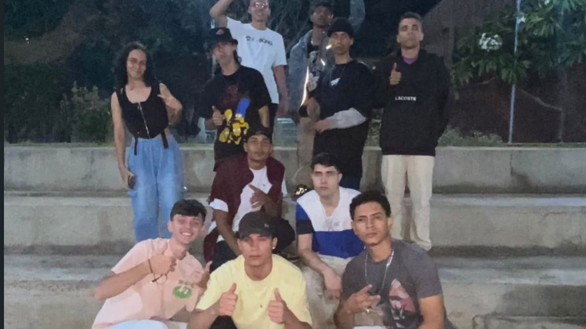
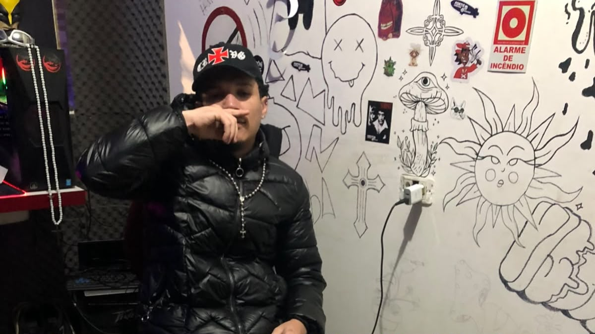
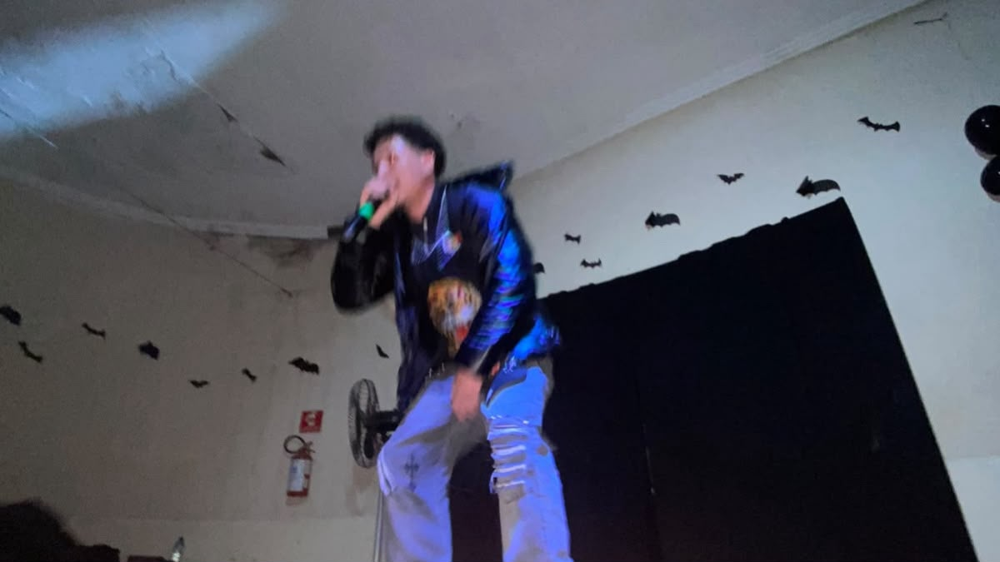

LANÇAMENTO · 2024
OUVIR NO SPOTIFY ↗
OLLIVERVN
HIP-HOP · RAP · TRAP · PLUG, GOIÁS, BRASIL
AS PRIMEIRAS BATIDAS.
A música entrou na vida de OlliverVn ainda durante sua época de escola. Seu primeiro contato com a cultura musical aconteceu através do funk, gênero que despertou seu interesse pelo universo dos ritmos e das produções musicais.
O que começou de maneira simples, com batidas feitas na palma das mãos, aos poucos se transformou em uma busca por algo maior. A curiosidade e o desejo de desenvolver uma sonoridade própria fizeram com que desse seus primeiros passos de forma independente, chegando a construir seu próprio estúdio.
A CULTURA UNDERGROUND.
Com o passar do tempo, sua caminhada ganhou novas experiências. As batalhas de rima, as vivências nas ruas e o contato cada vez mais próximo com a cena underground passaram a fazer parte de sua formação artística.
Foi nesse ambiente que OlliverVn começou a desenvolver sua identidade, compreender melhor sua relação com a música e construir seu espaço dentro da cena independente.

A DIREÇÃO DO PLUG.
Posteriormente, o trap se tornou sua principal direção musical. Dentro desse universo, encontrou na vertente Plug uma linguagem com a qual se identificou e passou a desenvolver sua própria estética.
O estilo se tornou uma parte importante de sua identidade musical, conectando suas influências do hip-hop e do rap à atmosfera característica do underground.

NOVOS CAMINHOS, NOVOS PALCOS.
A trajetória de OlliverVn começou a ultrapassar os limites de sua região. Com o desenvolvimento de seu trabalho, surgiram oportunidades de viajar, realizar apresentações e compartilhar sua música com novos públicos.
Entre essas experiências, um dos momentos mais marcantes foi seu primeiro show em São Paulo, representando uma nova etapa em sua caminhada e a oportunidade de levar sua arte para além de suas origens.

ANTES DE OLLIVERVN.
Antes de assumir definitivamente o nome artístico OlliverVn, o artista também utilizou o vulgo Ex Mi Oliver.
Essa fase representa uma parte importante de sua história. Um período de descobertas, experiências e transformações que contribuíram para a construção da identidade que carrega atualmente.
UMA HISTÓRIA EM CONSTRUÇÃO.
Ao longo dos anos, OlliverVn vem construindo seu catálogo musical e consolidando sua presença no cenário independente. Seus trabalhos transitam pelo hip-hop, rap e trap, mantendo uma ligação com a estética underground e com a vertente Plug.
LANÇAMENTO · 2025
OUVIR NO SPOTIFY ↗
BPM
LANÇAMENTO · 2026
OUVIR NO SPOTIFY ↗
GOIÁS
LANÇAMENTO · 2026
OUVIR NO SPOTIFY ↗
SUJO
LANÇAMENTO · 2026
OUVIR NO SPOTIFY ↗
ANARQUIA
“DA PRIMEIRA BATIDA À CONSTRUÇÃO DE UMA IDENTIDADE PRÓPRIA.”
ESSA É A
TRAJETÓRIA DE OLLIVERVN.
UMA HISTÓRIA QUE AINDA ESTÁ SENDO ESCRITA.
IMP RECORDS © 2026